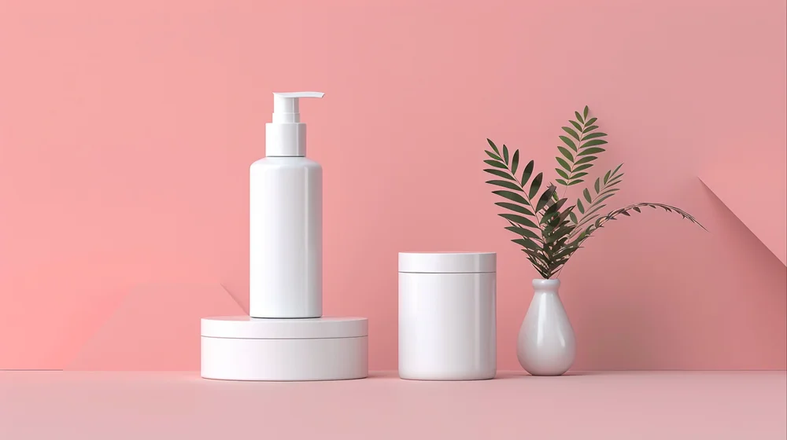

Formulation writer
"I've stopped trusting any skincare claim that doesn't come with a percentage. If a brand won't say how much active is in the bottle, I assume it's decoration."
 Botanical Rituals
Botanical Rituals

Home/Journal
Issue 14 · Sep 2026
Ingredient science, ritual guides and honest formulation notes from the Stackly lab — for the people who read the label before the review.
 Featured this week
Bakuchiol vs. retinol — what four weeks of testing actually showed
Featured this week
Bakuchiol vs. retinol — what four weeks of testing actually showed
Latest entries

We ran both actives side by side on the same skin for a month. Here's the unedited log, redness and all.
No ten-step routine survives a weekday. This is the order that holds up on the days you're rushing.
Sheer Bloom was formulated to sit on top of a serum, not fight it. Here's how we tested for that.
Why we treat the scalp barrier the same way we treat the face, and what changed when we did.

What the compound actually does at a cellular level, and why we dose it higher than most.

Botanical eau de parfum fades differently to synthetic blends. Here's how to work with that, not against it.
No entries in this category yet — check back soon.

Featured
"We killed three formulas that tested well on paper because they didn't hold up on real skin, in a real Chennai summer, worn under real sunscreen."
Our formulation lead walks through the batch that almost shipped, the stability failure that stopped it, and the single ingredient swap that fixed it — long before it ever reached a shelf.
Read the full storyMost read
Browse by topic
Every article lives in at least one of these — pick what your skin needs right now.
From our editors
Formulation writer
"I've stopped trusting any skincare claim that doesn't come with a percentage. If a brand won't say how much active is in the bottle, I assume it's decoration."

Beauty editor
"The best routine I've ever had was also the most boring — three products, worn correctly, for six months straight. Novelty is the enemy of visible results."

Community lead
"Most of what readers ask isn't 'does this work' — it's 'will this work on my skin.' That question doesn't have a universal answer, and I wish more brands admitted that."
Recently published